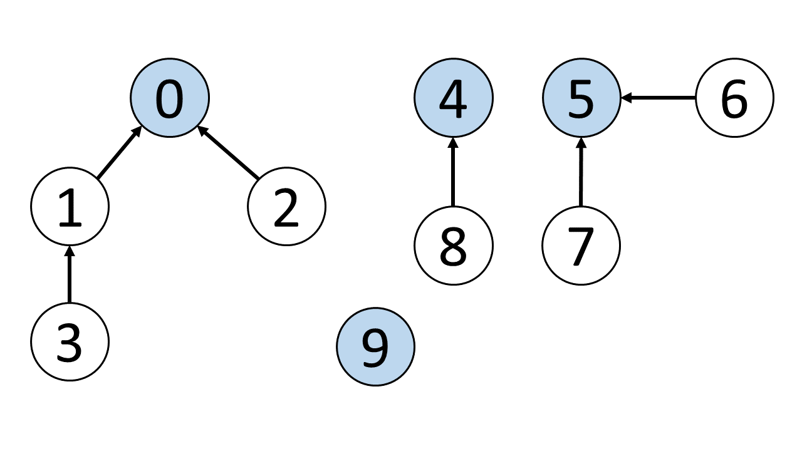

Overview of Disjoint Set
Учитывая количество вершин и ребер между ними, как мы можем быстро проверить, соединены ли две вершины?
Например, на рисунке 5 показаны ребра между вершинами, так как же мы можем эффективно проверить, соединен ли
0 с 3, 1 с 5 или 7 с 8? Мы можем сделать это, используя структуру данных «непересекающееся множество», также
известную как структура данных «объединенного поиска». Обратите внимание, что другие могут называть это
алгоритмом. В этой карточке исследования термин «несвязное множество» относится к структуре данных.

Рисунок 5. Каждый граф состоит из вершин и ребер. Корневые вершины выделены синим цветом.
Основное использование непересекающихся наборов — это определение связности между компонентами сети. «Сеть»
здесь может быть компьютерной сетью или социальной сетью. Например, мы можем использовать непересекающееся
множество, чтобы определить, имеют ли два человека общего предка.
Terminologies
- Родительский узел: прямой родительский узел вершины. Например, на рисунке 5 родительский узел вершины 3
— 1, родительский узел вершины 2 — 0, а родительский узел вершины 9 — 9.
- Корневой узел: узел без родительского узла; его можно рассматривать как родительский узел самого себя.
Например, на рисунке 5 корневой узел вершин 3 и 2 равен 0. Что касается 0, это собственный корневой узел
и родительский узел. Аналогично, корневой узел и родительский узел вершины 9 — это сама 9. Иногда
корневой узел называют головным узлом.
Introduction to Disjoint Sets
Summary of video content:
- Как работают «непересекающиеся множества».
- Решение вопроса о связности на рисунке 5.
Video: Introduction to Disjoint Sets Export v4_1080p
Implementing “disjoint sets”
Summary of video content:
- Как реализовать «непересекающееся множество».
- Функция find непересекающегося множества.
- Функция union непересекающегося множества.
Video: Implementing Disjoint Sets Export v2 (1)_1080p
The two important functions of a “disjoint set.”
Во вводных видеороликах выше мы обсудили две важные функции в «непересекающемся наборе».
- Функция find находит корневой узел заданной вершины. Например, на рисунке 5 выходные данные функции
поиска для вершины 3 равны 0.
- Функция объединения объединяет две вершины и делает их корневые узлы одинаковыми. На рисунке 5, если мы
объединим вершину 4 и вершину 5, их корневой узел станет одинаковым, что означает, что функция
объединения изменит корневой узел вершины 4 или вершины 5 на один и тот же корневой узел.
There are two ways to implement a “disjoint set”.
- Реализация с быстрым поиском: в этом случае временная сложность функции поиска будет равна
О(1). Однако функция объединения займет больше времени из-за временной сложности
On).
- Реализация с помощью Quick Union: по сравнению с реализацией Quick Find временная сложность функции
объединения лучше. Между тем функция поиска в этом случае займет больше времени.
Next, we will learn these two implementations and two common strategies to optimize a disjoint set.